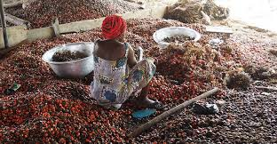
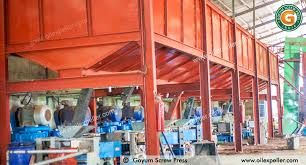
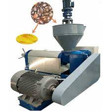
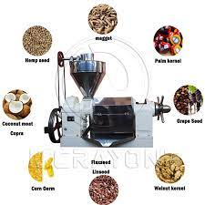
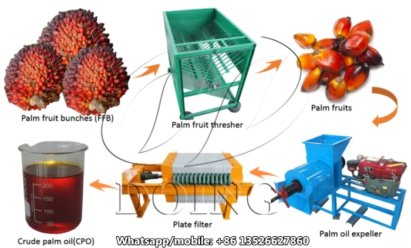

About Us
Quality • Reliability • Professional Service
Blessed Egwu Oyo Enterprise is a fast-growing agro-processing company specializing in high-quality Palm Kernel Oil (PKO) production and palm kernel by-product supply in Nigeria. Based in Abakaliki, Ebonyi State, we operate at the center of one of the most active palm-producing regions in West Africa. Our company is committed to transforming raw palm kernels into premium-grade crude palm kernel oil and Palm Kernel Cake (PKC) for use by food processors, industrial manufacturers, feed mills, livestock farms, and export buyers across the region.
Through modern extraction technologies, efficient drying systems, and a clean, well-structured processing environment, we ensure all products meet national and international quality specifications. Our skilled workforce and quality-assurance team oversee every stage of production—from kernel sourcing to oil clarification—ensuring consistent purity, optimal yield, and reliable supply throughout the year. We maintain strong partnerships with farmers, aggregators, transporters, and distributors, enabling us to operate a sustainable, transparent, and efficient palm kernel oil value chain.
Our Mission
To produce high-quality Palm Kernel Oil (PKO) and palm kernel by-products using modern, efficient, and environmentally responsible processing technologies. Our mission is to deliver consistent value, superior product quality, and reliable year-round supply to food processors, manufacturers, feed producers, and industrial clients across Nigeria and the global marketplace.
Our Vision
To become the leading and most trusted provider of Palm Kernel Oil (PKO) and palm kernel by-products in Africa, recognized for setting industry benchmarks in quality, innovation, and sustainable agro-industrial practices, while delivering value to farmers, manufacturers, and industrial partners.
Our Core Values
- Integrity: We operate transparently and ethically in all aspects of palm kernel oil production.
- Quality Commitment: We maintain strict quality standards for Palm Kernel Oil (PKO), palm kernel cake, and by-products through continuous testing and monitoring.
- Innovation: We employ modern extraction, drying, and processing technologies to maximize yield and efficiency.
- Customer Focus: We build long-term relationships with feed mills, manufacturers, and industrial buyers by prioritizing satisfaction and reliability.
- Reliability: Consistent supply, timely deliveries, and dependable logistics form the backbone of our operations.
Why Choose Us?
- Premium-Grade Products: Our PKO, palm kernel cake, and related by-products undergo rigorous quality control to meet industrial standards.
- Advanced Technology: We utilize modern mechanical presses, dryers, and extraction systems for maximum efficiency and product quality.
- Experienced Team: Industry professionals oversee all stages from procurement to production and delivery.
- Reliable Supply Chain: Strong partnerships with local farmers and collectors ensure consistent year-round raw material availability.
- Competitive Pricing: We provide high-quality palm kernel products at fair, transparent rates.
- Nationwide & Regional Delivery: Secure logistics for industrial buyers across Nigeria and West Africa.
Our Industry Impact
Blessed Egwu Oyo Enterprise has played a key role in supporting the livestock, poultry, aquaculture, and agro-industrial sectors by providing reliable, high-quality Palm Kernel Oil and by-products. Our products serve feed manufacturers, poultry farms, cattle ranches, and industrial processors, ensuring consistent nutrition, operational efficiency, and supply chain stability. By leveraging modern processing technologies and strong supplier networks, we contribute to the growth and sustainability of Nigeria’s agro-industrial economy.
Business Plan
Palm Kernel Oil Processing (Abakaliki, Ebonyi State, Nigeria)
Prepared:
October 9, 2025
1. Executive Summary
Business: Processing palm kernels into crude palm kernel oil (CPKO) and kernel cake.
Company name: Blessed Egwu Oyo Enterprise
Location: Abakaliki (capital of Ebonyi State) — factory & admin.
Raw material sourcing: Cross River, Ebonyi, Rivers, Edo and other producing regions.
Target markets: Local edible oil wholesalers, soap and cosmetics manufacturers, animal-feed producers, regional exporters.
Capacity (sample scenario): Processing 2 tonnes palm kernel/day → ~270 tonnes oil/year.
Investment required (sample): CAPEX ~₦35M; initial working capital ~₦25M → total ≈ ₦60M.
Key advantage: Strategic sourcing from nearby producing states, low transport times, strong domestic demand.
2. Assumptions (changeable)
- The plant will process 2 tonnes of palm kernels per day, operating 300 days/year.
- Palm kernel → palm kernel oil yield: 45% by weight of kernels (typical industrial yield).
- Average selling price (sample): ₦600,000 per tonne of crude palm kernel oil (CPKO). (You may replace with your market rate.)
- Raw palm kernel purchase price (sample): ₦120,000 per tonne.
- Working days per year: 300.
3. Products & Revenue Streams
- Crude Palm Kernel Oil (CPKO): Main product for edible and industrial uses.
- Palm Kernel Cake / Meal: By-product widely used in animal feed and organic fertilizer production.
- Refined Oil (optional): Higher margins if you later add refining/packaging and introduce a retail brand.
- Seed / Charcoal: Minor revenue stream from residues if carbonized or processed further.
4. Market Analysis (Summary)
- Demand Drivers: Population growth, FMCG manufacturing, soap/cosmetics industry, and rising animal feed needs.
- Local Advantage: Proximity to kernel-producing states reduces freight cost and minimizes spoilage.
- Customers: Bulk wholesalers, local FMCG firms, feed mills, regional traders, and potential exporters.
- Competition: Ranges from small-scale crushers to larger palm processors. Competitive factors include price, quality consistency, reliability, and certifications (e.g., NAFDAC, food safety).
- Market Strategy: Build direct sourcing contracts with farmers and kernel collectors in Cross River, Rivers, Edo, and Ebonyi. Offer reliable offtake, timely payments, and quality assurance.
5. Location & Facility
Site: Light-industrial plot near Abakaliki with easy access to major roads linking raw-material sources.
Facility requirements include:
- Raw material receiving & dry storage areas.
- Kernel cracking and shell–kernel separation zone.
- Kernel drying section (if moisture reduction is needed).
- Oil extraction room — screw press or solvent extraction setup depending on scale.
- Oil clarification and storage tanks for CPKO.
- Packaging and dispatch unit for bulk buyers.
6. Technology & Equipment (Example List)
- Mechanical kernel cracker / husker (if whole nuts are purchased).
- Oil expeller (mechanical press) — main oil extraction machine.
- Clarifier / settling tanks for separating oil from water and solids.
- Crude oil storage tanks (stainless or food-grade coated).
- Conveyors, dryers, hoppers, and industrial weighing scales.
- Packaging station for drums, jerrycans, or bulk bags.
- Basic laboratory QA equipment (tests for FFAs, moisture, impurities).
- Waste management systems: shell/husk handling, effluent settling ponds.
Estimated CAPEX (sample): ₦25–40 million for a modest plant, depending on equipment size, new vs used machinery, civil works, electrical installation, and commissioning.
7. Supply Chain & Procurement Plan
- Primary suppliers: Kernel collectors, farmers, and small-scale processors in Cross River, Rivers, Edo, and Ebonyi.
- Procurement model: Mix of spot purchases and forward contracts during peak harvest. Offer incentives, training, and aggregation support to secure stable supply.
- CEO / Managing Director
- Production Manager
- Procurement Manager
- Sales & Marketing Manager
- Finance / Accounts Manager
- Mechanics (2–4 depending on scale)
- Electricians (1–2)
- CQ Technician (1)
- Storekeepers (1–2)
- Forklift Drivers (1–2)
- Security Guards (2–4)
- Cleaners (2–4)
- B2B Sales: Edible oil millers, animal feed mills, wholesalers, traders.
- Pricing Strategy: Competitive per-tonne pricing; bulk discounts for large contracts.
- Branding: Packaging, labeling, and NAFDAC/SON compliance for credibility.
- Sales Channels: Direct industry sales + distributors in Enugu, Port Harcourt, Benin, Ibadan, Lagos.
- Digital: Online B2B platforms, WhatsApp Business, LinkedIn outreach.
- Sales Tracking: Maintain customer database, delivery logs, QA lab test records.
- NAFDAC registration: Required for refined oil intended for human consumption.
- SON registration: Mandatory for animal feed products (PKC).
- Quality Control: Test moisture, oil content, and free fatty acids (FFA).
- Lab Testing: Routine checks for refined oil before retail distribution.
- Customer Feedback: Used to meet buyer specifications and improve consistency.
- Raw Material Price Volatility: Use forward-purchase agreements and risk diversification across states.
- Equipment breakdown: Preventive maintenance + spare parts inventory.
- Market competition: Focus on consistent quality, fast delivery, and long-term supply contracts.
- Regulatory delays: Early submission for permits and compliance documents.
- 1 plant, 1 processing line
- 6,000 tonnes/year throughput
- Initial investment: ₦60,000,000 (CAPEX ₦35M + WC ₦25M)
- Sales: ₦120,000 per tonne
- Cost: ₦47,000 per tonne
- Revenue: ₦720,000,000/year
- Total Cost: ₦282,000,000/year
- Operating Margin: ₦438,000,000/year
- Net Margin (after tax/interest/depreciation): ~₦47,000,000/year
- Payback Period: ~1.27 years
- Equipment & Installation: ₦25–35M
- Building & Civil Works: ₦20–25M
- Working Capital: ₦5–10M
- Licensing, QA Lab, Contingencies: ₦2–3M
- Month 1–2: Feasibility study, funding confirmation, early recruitment.
- Month 2–3: Land/lease acquisition, permits, environmental compliance.
- Month 3–4: Purchase/install equipment; build civil structures.
- Month 3–5: Staff recruitment/training; supply contracts.
- Month 4–6: Test batches; quality validation.
- Month 6–9: Full operations; scale production; consider refining expansion.
- Yield efficiency (target 45%)
- Raw material cost per tonne
- Inventory turnover (days)
- Monthly sales (volume & value)
- Gross margin & net margin %
- On-time delivery performance
- Validate kernel prices from Cross River, Rivers, Edo, Ebonyi.
- Request equipment quotes (new vs used); confirm warranty terms.
- Get utility (power/water) quotes; negotiate offtake terms.
- Develop full financial model (local prices, taxes, interest rates).
- Apply for permits (CAC, NAFDAC/SON, LGA, environmental approvals).
Business Operations Overview
Maintenance: Preventive maintenance schedule for presses, dryers, conveyors, and motors.
Maintain a spare-parts inventory for fast repairs and reduced downtime.
9. Organization & Staffing (Sample)
Core Management:
Plant Staff:
Total Staff: 20–25 depending on capacity and automation level.
10. Marketing & Sales Strategy
11. Regulatory & Quality
12. Risk Analysis & Mitigations
13. Financial Snapshot – Sample Scenario (Conservative)
Assumptions:
Calculations:
*Note: Replace sample inputs with local vendor quotes and market pricing.*
14. Funding & Use of Funds (Sample)
Total Required: ₦60,000,000
Use of Funds:
Funding Options: Equity, commercial loans, partnerships, impact investors, DFIs.
15. Implementation Timeline (6–9 Months)
16. Key Performance Indicators (KPIs)
17. Next Steps (Practical)
Investor Proposal / Executive Outline
To: [Investor Name]
From: Blessed Group
Enterprise
Subject: Investment Proposal
& Executive Overview
Blessed Group Enterprise seeks an investment of ₦60,000,000 to establish a palm kernel oil processing plant in Abakaliki, Ebonyi State. The plant will process palm kernels into crude palm kernel oil (CPKO) and palm kernel cake (PKC), with a capacity of 10 tons/day, operating 300 days/year.
Funds will cover land, machinery, installation, permits, and working capital. Products will be sold to industrial buyers across Nigeria.
Expected Payback: ~2.5 years
IRR: ~35%
Detailed financial statements available upon
request.
Blessed Group Enterprise
Managing Director
Abakaliki, Ebonyi State
Image Gallery
Our facilities, products & operations















Our Services
Industry-standard production and supply
Palm Oil Meal Processing
High-quality palm oil meal produced with advanced extraction technology.
PKC Distribution
Bulk supply of palm kernel cake for feed mills and industries.
Agro Packaging
Customized packaging solutions for wholesalers and exporters.
Bulk Orders
Large-scale processing and continuous supply for industrial clients.
Contact Us
We respond quickly • We're here to assist you
📞 Customer Service Phone: +234 08138463039
✉️ Email Support: support@blessedegwuoyo@gmail.com